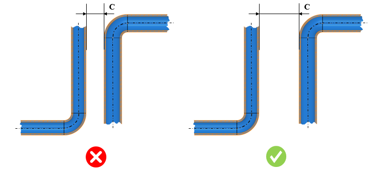

チューブ間の最小クリアランスは、ユーザーが指定した値以上である必要があります。
航空機の流体系配管は、通常、金属製チューブまたはフレキシブルホースで構成されます。金属製チューブ（剛性配管とも呼ばれる）は、固定用途や比較的長い直線配管が可能な箇所で使用されます。これらは、燃料、油、冷却剤、酸素、計器、油圧ラインなどに航空機で広く使用されています。フレキシブルホースは、可動部を伴う箇所や、チューブが大きな振動を受ける箇所で一般的に使用されます。チューブ間のクリアランスがゼロの場合、振動による損傷が発生する可能性があり、さらに腐食が進行してシステム内での漏れにつながる恐れがあります。
本ルールでは、チューブ外径同士の最小許容クリアランスを指定するように構成できます。

ここで、
C = チューブ間のクリアランス
注記：
本ルールは、単一のチューブループのみで構成されたパーツファイルには適用されません。
本ルールは、複数のチューブで構成されたアセンブリファイルに対して実行されます。
チューブの断面形状は円形であり、かつチューブ長さ方向に対して肉厚が一定である必要があります。